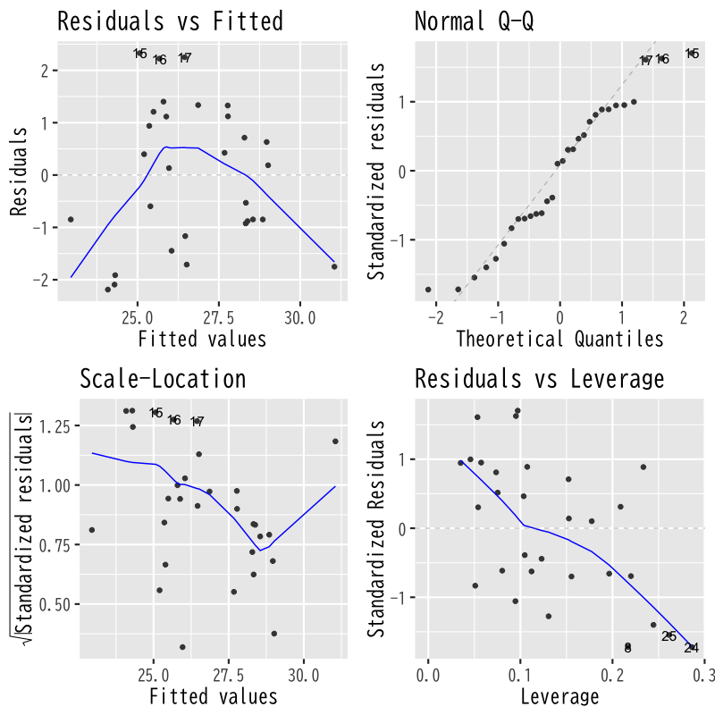
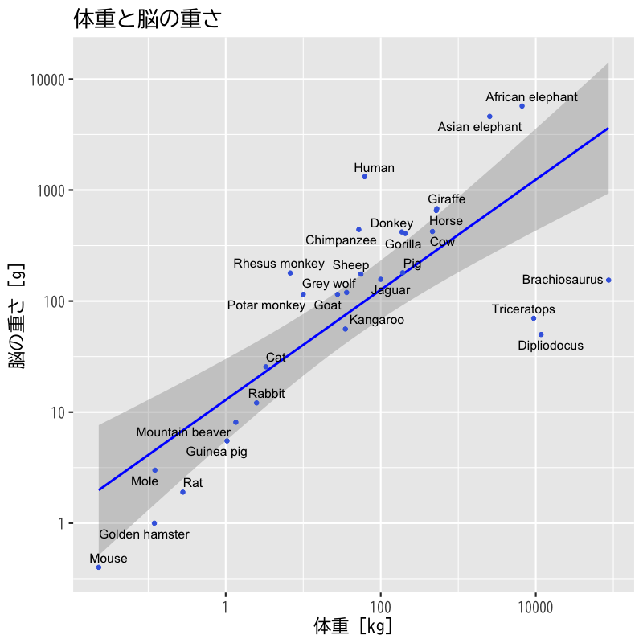
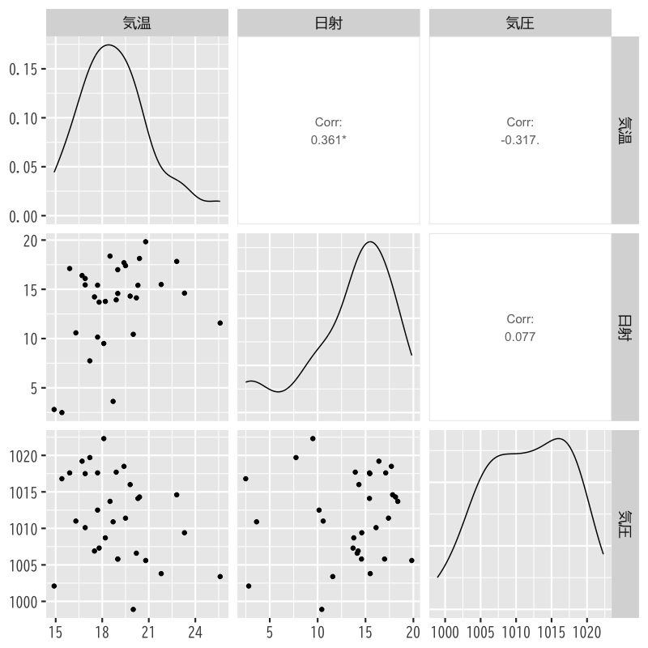

回帰分析
予測と発展的なモデル
(Press ? for help, n and p for next and previous slide)
講義の内容
- 第1回: 回帰モデルの考え方と推定
- 第2回: モデルの評価
- 第3回: モデルによる予測と発展的なモデル
回帰分析の復習
線形回帰モデル
- 目的変数 を 説明変数 で説明する関係式を構成
- 説明変数: \(x_1,\dotsc,x_p\) (p次元)
- 目的変数: \(y\) (1次元)
回帰係数 \(\beta_0,\beta_1,\dotsc,\beta_p\) を用いた一次式
\begin{equation} y=\beta_0+\beta_1x_1+\dotsb+\beta_px_p \end{equation}誤差項 を含む確率モデルで観測データを表現
\begin{equation} y_i=\beta_0+\beta_1 x_{i1}+\cdots+\beta_px_{ip}+\epsilon_i \quad (i=1,\dotsc,n) \end{equation}
問題設定
確率モデル
\begin{equation} \boldsymbol{y} =X\boldsymbol{\beta}+\boldsymbol{\epsilon}, \quad\boldsymbol{\epsilon}\sim\text{確率分布} \end{equation}式の評価 : 残差平方和 の最小化による推定
\begin{equation} S(\boldsymbol{\beta}) =(\boldsymbol{y}-X\boldsymbol{\beta})^{\mathsf{T}} (\boldsymbol{y}-X\boldsymbol{\beta}) \end{equation}
解とその一意性
解の条件 : 正規方程式
\begin{equation} X^{\mathsf{T}}X\boldsymbol{\beta} =X^{\mathsf{T}}\boldsymbol{y} \end{equation}解の一意性 : Gram 行列 \(X^{\mathsf{T}}X\) が正則
\begin{equation} \hat{\boldsymbol{\beta}} = (X^{\mathsf{T}}X)^{-1} X^{\mathsf{T}}\boldsymbol{y} \end{equation}
解析の事例
東京の8月の気候の分析
データの一部
東京の8月の気候 日付 気温 降雨 日射 降雪 風向 風速 気圧 湿度 雲量 2022-08-01 30.6 0 24.53 0 SSE 2.8 1010.1 72 8.8 2022-08-02 31.6 0 24.78 0 SSE 2.5 1008.8 71 9.8 2022-08-03 31.5 0 21.24 0 SSE 2.3 1005.1 75 7.3 2022-08-04 24.6 18 3.46 0 NE 2.7 1006 89 10 2022-08-05 23.8 0 7.65 0 NE 2.9 1006.1 83 9.8 2022-08-06 25.2 0 17.06 0 SSE 2.4 1008.1 73 10 2022-08-07 27.6 0 14.45 0 SSE 2.2 1009.3 80 8.3 2022-08-08 29.8 0 22.52 0 S 4.5 1008.5 75 4.8 2022-08-09 30.9 0 25.5 0 S 5.5 1006.9 69 6.8 2022-08-10 30.5 0 25.99 0 S 5.3 1007.2 70 6 2022-08-11 29.5 0 22.9 0 S 5.4 1007.5 75 6 2022-08-12 28.3 2 15.36 0 S 5.8 1007.5 81 9.8 2022-08-13 25.5 47.5 4.53 0 S 4.8 1005.6 94 10 2022-08-14 28.2 0 16.28 0 SSE 2.6 1003 84 8.8
- 気温を説明する5種類の線形回帰モデルを検討
- モデル1 : 気温 = F(気圧)
- モデル2 : 気温 = F(日射)
- モデル3 : 気温 = F(気圧, 日射)
- モデル4 : 気温 = F(気圧, 日射, 湿度)
- モデル5 : 気温 = F(気圧, 日射, 雲量)
分析の視覚化
関連するデータの散布図

Figure 1: 散布図
観測値とあてはめ値の比較

Figure 2: モデルの比較
寄与率
決定係数 (R-squared)
\begin{equation} R^2 = 1-\frac{\sum_{i=1}^n\hat{\epsilon}_i^2}{\sum_{i=1}^n(y_i-\bar{y})^2} \end{equation}自由度調整済み決定係数 (adjusted R-squared)
\begin{equation} \bar{R}^2 = 1-\frac{\frac{1}{n{-}p{-}1}\sum_{i=1}^n\hat{\epsilon}_i^2} {\frac{1}{n{-}1}\sum_{i=1}^n(y_i-\bar{y})^2} \end{equation}- 不偏分散で補正
モデルの評価
決定係数(\(R^{2}\), Adjusted \(R^{2}\))
寄与率によるモデルの比較 目的変数 気温 モデル1 モデル2 モデル3 モデル4 モデル5 気圧 -0.178 (0.127) -0.223*** (0.068) -0.214*** (0.067) -0.242*** (0.068) 日射 0.297*** (0.041) 0.306*** (0.036) 0.366*** (0.056) 0.348*** (0.045) 湿度 0.071 (0.051) 雲量 0.238 (0.161) Constant 206.535 (127.430) 22.969*** (0.690) 247.477*** (68.433) 231.843*** (68.254) 263.717*** (67.941) R2 0.064 0.641 0.741 0.758 0.760 Adjusted R2 0.031 0.628 0.722 0.731 0.733
\(F\)統計量による検定
- 説明変数のうち1つでも役に立つか否かを検定する
- 帰無仮説 \(H_{0}\): \(\beta_1=\dotsb=\beta_p=0\)
- 対立仮説 \(H_{1}\): \(\exists j\;\beta_j\neq0\) (少なくとも1つは役に立つ)
\(F\)統計量: 決定係数(または残差)を用いて計算
\begin{equation} F =\frac{n{-}p{-}1}{p}\frac{R^2}{1-R^2} \end{equation}- \(p\)値: 自由度 \(p,n{-}p{-}1\) の \(F\)分布で計算
モデルの評価
\(F\)統計量
F統計量によるモデルの比較 目的変数 気温 モデル1 モデル2 モデル3 モデル4 モデル5 気圧 -0.178 (0.127) -0.223*** (0.068) -0.214*** (0.067) -0.242*** (0.068) 日射 0.297*** (0.041) 0.306*** (0.036) 0.366*** (0.056) 0.348*** (0.045) 湿度 0.071 (0.051) 雲量 0.238 (0.161) Constant 206.535 (127.430) 22.969*** (0.690) 247.477*** (68.433) 231.843*** (68.254) 263.717*** (67.941) R2 0.064 0.641 0.741 0.758 0.760 Adjusted R2 0.031 0.628 0.722 0.731 0.733 Residual Std. Error 2.463 (df = 29) 1.526 (df = 29) 1.320 (df = 28) 1.298 (df = 27) 1.293 (df = 27) F Statistic 1.973 (df = 1; 29) 51.743*** (df = 1; 29) 39.964*** (df = 2; 28) 28.174*** (df = 3; 27) 28.484*** (df = 3; 27) Note: *p<0.1; **p<0.05; ***p<0.01
\(t\)統計量による検定
- 回帰係数 \(\beta_j\) が回帰式に寄与するか否かを検定する
- 帰無仮説 \(H_{0}\): \(\beta_j=0\)
- 対立仮説 \(H_{1}\): \(\beta_j\neq0\) (\(\beta_j\) は役に立つ)
\(t\)統計量: 各係数ごと，\(\zeta\) は \((X^{\mathsf{T}} X)^{-1}\) の対角成分
\begin{equation} t=\frac{\hat{\beta}_j}{\hat{\sigma}\zeta_{j}} \end{equation}- \(p\)値: 自由度 \(n{-}p{-}1\) の \(t\)分布を用いて計算
モデルの評価
\(t\)統計量
t統計量によるモデルの比較 目的変数 気温 モデル1 モデル2 モデル3 モデル4 モデル5 気圧 -0.178 (0.127) -0.223*** (0.068) -0.214*** (0.067) -0.242*** (0.068) t = -1.405 t = -3.281 t = -3.185 t = -3.566 p = 0.171 p = 0.003 p = 0.004 p = 0.002 日射 0.297*** (0.041) 0.306*** (0.036) 0.366*** (0.056) 0.348*** (0.045) t = 7.193 t = 8.547 t = 6.582 t = 7.699 p = 0.00000 p = 0.000 p = 0.00000 p = 0.00000 湿度 0.071 (0.051) t = 1.390 p = 0.176 雲量 0.238 (0.161) t = 1.474 p = 0.152 Constant 206.535 (127.430) 22.969*** (0.690) 247.477*** (68.433) 231.843*** (68.254) 263.717*** (67.941) t = 1.621 t = 33.277 t = 3.616 t = 3.397 t = 3.882 p = 0.116 p = 0.000 p = 0.002 p = 0.003 p = 0.001
診断プロットによる評価
モデル4

Figure 3: モデル4の診断
モデル5

Figure 4: モデル5の診断
回帰モデルによる予測
予測
新しいデータ (説明変数) \(\boldsymbol{x}\) に対する 予測値
\begin{equation} \hat{y} = (1,\boldsymbol{x}^{\mathsf{T}})\hat{\boldsymbol{\beta}}, \qquad \hat{\boldsymbol{\beta}} = (X^{\mathsf{T}}X)^{-1} X^{\mathsf{T}}\boldsymbol{y} \end{equation}予測値は元データの目的変数の重み付け線形和
\begin{equation} \hat{y} = \boldsymbol{w}(\boldsymbol{x})^{\mathsf{T}}\boldsymbol{y}, \qquad \boldsymbol{w}(\boldsymbol{x})^{\mathsf{T}} = (1,\boldsymbol{x}^{\mathsf{T}}) (X^{\mathsf{T}}X)^{-1} X^{\mathsf{T}} \end{equation}- 重みは元データと新規データの説明変数で決定
予測値の性質
推定量は以下の性質をもつ多変量正規分布
\begin{align} \mathbb{E}[\hat{\boldsymbol{\beta}}] &=\boldsymbol{\beta}\\ \mathrm{Cov}(\hat{\boldsymbol{\beta}}) &=\sigma^{2}(X^{\mathsf{T}}X)^{-1} \end{align}この性質を利用して以下の3つの値の違いを評価
\begin{align} \hat{y}&=(1,\boldsymbol{x}^{\mathsf{T}})\hat{\boldsymbol{\beta}} &&\text{(回帰式による予測値)}\\ \tilde{y}&=(1,\boldsymbol{x}^{\mathsf{T}})\boldsymbol{\beta} &&\text{(最適な予測値)}\\ y&=(1,\boldsymbol{x}^{\mathsf{T}})\boldsymbol{\beta}+\epsilon &&\text{(観測値)} \end{align}- \(\hat{y}\) と \(y\) は独立な正規分布に従うことに注意
演習
問題
- 誤差が平均0 分散 \(\sigma^{2}\) の正規分布に従うとき，
以下の問に答えなさい
- 予測値 \(\hat{y}\) の平均を求めよ
- 予測値 \(\hat{y}\) の分散を求めよ
解答例
定義にもとづいて計算する
\begin{align} \mathbb{E}[\hat{y}] &= \mathbb{E}[(1,\boldsymbol{x}^{\mathsf{T}})\hat{\boldsymbol{\beta}}]\\ &= (1,\boldsymbol{x}^{\mathsf{T}})\mathbb{E}[\hat{\boldsymbol{\beta}}]\\ &= (1,\boldsymbol{x}^{\mathsf{T}})\boldsymbol{\beta}\\ &= \tilde{y} \end{align}- 真の回帰式による最適な予測値
定義にもとづいて計算する
\begin{align} \mathrm{Var}(\hat{y}) &= \mathrm{Var}((1,\boldsymbol{x}^{\mathsf{T}}) (\hat{\boldsymbol{\beta}}-\boldsymbol{\beta}))\\ &= (1,\boldsymbol{x}^{\mathsf{T}}) \mathrm{Cov}(\hat{\boldsymbol{\beta}}-\boldsymbol{\beta}) (1,\boldsymbol{x}^{\mathsf{T}})^{\mathsf{T}}\\ &= (1,\boldsymbol{x}^{\mathsf{T}}) \mathrm{Cov}(\hat{\boldsymbol{\beta}}) (1,\boldsymbol{x}^{\mathsf{T}})^{\mathsf{T}}\\ &= (1,\boldsymbol{x}^{\mathsf{T}}) \sigma^{2} (X^{\mathsf{T}}X)^{-1} (1,\boldsymbol{x}^{\mathsf{T}})^{\mathsf{T}}\\ &= \sigma^{2} (1,\boldsymbol{x}^{\mathsf{T}}) (X^{\mathsf{T}}X)^{-1} (1,\boldsymbol{x}^{\mathsf{T}})^{\mathsf{T}} \end{align}
信頼区間
最適な予測値との差
差の分布は以下の平均・分散をもつ正規分布に従う
\begin{align} \mathbb{E}[\tilde{y}-\hat{y}] &=(1,\boldsymbol{x}^{\mathsf{T}})\boldsymbol{\beta} -(1,\boldsymbol{x}^{\mathsf{T}})\mathbb{E}[\hat{\boldsymbol{\beta}}] =0\\ \mathrm{Var}(\tilde{y}-\hat{y}) &=\underbrace{\sigma^{2}(1,\boldsymbol{x}^{\mathsf{T}})(X^{\mathsf{T}}X)^{-1} (1,\boldsymbol{x}^{\mathsf{T}})^{\mathsf{T}}}_{\text{\(\hat{\boldsymbol{\beta}}\)の推定誤差による分散}} =\sigma^{2}\gamma_{c}(\boldsymbol{x})^{2} \end{align}正規化による表現
\begin{equation} \frac{\tilde{y}-\hat{y}}{\sigma\gamma_{c}(\boldsymbol{x})} \sim \mathcal{N}(0,1) \end{equation}
信頼区間
未知の分散を不偏分散で推定
\begin{equation} Z= \frac{\tilde{y}-\hat{y}}{\hat{\sigma}\gamma_{c}(\boldsymbol{x})} \sim \mathcal{T}(n{-}p{-}1) \quad (\text{\(t\)分布}) \end{equation}確率 \(\alpha\) の信頼区間
\begin{equation} \mathcal{I}^{c}_{\alpha} = \left( \hat{y}-C_{\alpha}\hat{\sigma}\gamma_{c}(\boldsymbol{x}),\; \hat{y}+C_{\alpha}\hat{\sigma}\gamma_{c}(\boldsymbol{x}) \right) \end{equation}\begin{equation} P(|Z| < {C_{\alpha}} | Z\sim\mathcal{T}(n{-}p{-}1)) =\alpha \end{equation}- 最適な予測値 \(\tilde{y}\) が入ることが期待される区間
演習
問題
- 以下の問に答えなさい
信頼区間について以下の式が成り立つことを示せ
\begin{equation} P(\tilde{y}\in\mathcal{I}^{c}_{\alpha}) =\alpha \end{equation}- 観測値と予測値の差 \(y-\hat{y}\) の平均と分散を求めよ
解答例
\(C_{\alpha}\) の定義にもとづいて計算すればよい
\begin{align} \alpha &= P(|Z| < {C_{\alpha}})\\ &= P\left( \left|\frac{\tilde{y}-\hat{y}}{\hat{\sigma}\gamma_{c}(\boldsymbol{x})}\right| < {C_{\alpha}} \right)\\ &= P\left( |\tilde{y}-\hat{y}| < C_{\alpha}\hat{\sigma}\gamma_{c}(\boldsymbol{x}) \right)\\ &= P\left( -C_{\alpha}\hat{\sigma}\gamma_{c}(\boldsymbol{x}) < \tilde{y}-\hat{y} < C_{\alpha}\hat{\sigma}\gamma_{c}(\boldsymbol{x}) \right)\\ &= P\left( \hat{y}-C_{\alpha}\hat{\sigma}\gamma_{c}(\boldsymbol{x}) < \tilde{y} < \hat{y}+C_{\alpha}\hat{\sigma}\gamma_{c}(\boldsymbol{x}) \right) \end{align}
独立性を利用して計算する
\begin{align} \mathbb{E}[y-\hat{y}] &= \mathbb{E}[y] -\mathbb{E}[\hat{y}]\\ &= \tilde{y}-\tilde{y}\\ &= 0\\ \mathrm{Var}(y-\hat{y}) &= \mathrm{Var}(y) +\mathrm{Var}(\hat{y})\\ &= \sigma^{2} + \sigma^{2} (1,\boldsymbol{x}^{\mathsf{T}}) (X^{\mathsf{T}}X)^{-1} (1,\boldsymbol{x}^{\mathsf{T}})^{\mathsf{T}} \end{align}
予測区間
観測値との差
差の分布は以下の平均・分散をもつ正規分布に従う
\begin{align} \mathbb{E}[y-\hat{y}] &=(1,\boldsymbol{x}^{\mathsf{T}})\boldsymbol{\beta} +\mathbb{E}[\boldsymbol{\epsilon}] -(1,\boldsymbol{x}^{\mathsf{T}}) \mathbb{E}[\hat{\boldsymbol{\beta}}] =0\\ \mathrm{Var}(y-\hat{y}) &=\underbrace{\sigma^{2} (1,\boldsymbol{x}^{\mathsf{T}})(X^{\mathsf{T}}X)^{-1} (1,\boldsymbol{x}^{\mathsf{T}})^{\mathsf{T}} }_{\text{\(\hat{\boldsymbol{\beta}}\)の推定誤差による分散}} +\underbrace{\sigma^{2}}_{\text{誤差の分散}} =\sigma^{2}\gamma_{p}(\boldsymbol{x})^{2} \end{align}正規化による表現
\begin{equation} \frac{y-\hat{y}}{\sigma\gamma_{p}(\boldsymbol{x})} \sim \mathcal{N}(0,1) \end{equation}
予測区間
未知の分散を不偏分散で推定
\begin{equation} Z= \frac{y-\hat{y}}{\hat{\sigma}\gamma_{p}(\boldsymbol{x})} \sim \mathcal{T}(n{-}p{-}1) \quad (\text{\(t\)分布}) \end{equation}確率 \(\alpha\) の予測区間
\begin{equation} \mathcal{I}^{p}_{\alpha} = \left( \hat{y}-C_{\alpha}\hat{\sigma}\gamma_{p}(\boldsymbol{x}),\; \hat{y}+C_{\alpha}\hat{\sigma}\gamma_{p}(\boldsymbol{x}) \right) \end{equation}\begin{equation} P(|Z| < {C_{\alpha}} | Z\sim\mathcal{T}(n{-}p{-}1)) =\alpha \end{equation}- 観測値 \(y\) が入ることが期待される区間
- \(\gamma_{p}>\gamma_{c}\) なので信頼区間より広くなる
解析の事例
信頼区間と予測区間
- 東京の気候データを用いて以下を試みる
8月のデータで回帰式を推定する
気温 = F(気圧, 日射, 湿度)
- 上記のモデルで9月のデータを予測する
Figure 5: 8月のあてはめ値の信頼区間
Figure 6: 8月のあてはめ値の予測区間

Figure 7: 8月モデルによる9月の予測値の信頼区間

Figure 8: 8月モデルによる9月の予測値の予測区間
発展的なモデル
非線形性を含むモデル
- 目的変数 \(y\)
- 説明変数 \(x_1,\dotsc,x_p\)
- 説明変数の追加で対応可能
- 交互作用 (交差項) : \(x_ix_j\) のような説明変数の積
- 非線形変換 : \(\log(x_k)\) のような関数による変換
カテゴリカル変数を含むモデル
- 数値ではないデータ
- 悪性良性
- 血液型
- 適切な方法で数値に変換して対応:
- 2値の場合は 1,0 (真，偽) を割り当てる
- 悪性 : 1
- 良性 : 0
- 3値以上の場合は ダミー変数 を利用する (カテゴリ数-1個)
- A型 : (1,0,0)
- B型 : (0,1,0)
- O型 : (0,0,1)
- AB型 : (0,0,0)
- 2値の場合は 1,0 (真，偽) を割り当てる
解析の事例
非線形変換による線形化
| body | brain | |
| Mountain beaver | 1.350 | 8.100 |
| Cow | 465 | 423 |
| Grey wolf | 36.330 | 119.500 |
| Goat | 27.660 | 115 |
| Guinea pig | 1.040 | 5.500 |
| Dipliodocus | 11,700 | 50 |
| Asian elephant | 2,547 | 4,603 |
| Donkey | 187.100 | 419 |
| Horse | 521 | 655 |
| Potar monkey | 10 | 115 |
| Cat | 3.300 | 25.600 |
| Giraffe | 529 | 680 |
| Gorilla | 207 | 406 |
| Human | 62 | 1,320 |
- 様々な動物の体重と脳の重さの関係を調べる
- 体重は5桁程度のばらつき
- 脳の重さは4桁程度のばらつき
- 以下の変換を検討する
- 変換なし
- 体重を対数変換
- 体重および脳の重さを対数変換
散布図 (変換なし)

Figure 9: 散布図 (データの変換なし)
散布図 (x軸を対数変換)

Figure 10: 散布図 (体重を対数変換)
散布図 (xy軸を対数変換)

Figure 11: 散布図 (体重と脳の重さを対数変換)
単回帰 (全データ)

Figure 12: 単回帰
単回帰 (外れ値を除去)

Figure 13: 外れ値を除いた単回帰
非線形な関係の分析
- 東京の気候データを用いて
気温に影響する変数の関係を検討する
- 日射量と気圧の線形回帰モデル
(日射量と気圧が気温にどのように影響するか検討する) - これらの交互作用を加えた線形回帰モデル
(日射量と気圧の相互の関係の影響を検討する)
- 日射量と気圧の線形回帰モデル
関連データの散布図

Figure 14: 散布図 (気温・日射・気圧)
交互作用の効果
| 目的変数 | ||
| 気温 | ||
| 交互作用なし | 交互作用あり | |
| 日射 | 0.306*** (0.036) | -25.728* (13.058) |
| 気圧 | -0.223*** (0.068) | -0.622*** (0.210) |
| 日射×気圧 | 0.026* (0.013) | |
| Constant | 247.477*** (68.433) | 648.402*** (211.362) |
| Observations | 31 | 31 |
| R2 | 0.741 | 0.774 |
| Adjusted R2 | 0.722 | 0.749 |
| Residual Std. Error | 1.320 (df = 28) | 1.255 (df = 27) |
| F Statistic | 39.964*** (df = 2; 28) | 30.798*** (df = 3; 27) |
| Note: | *p<0.1; **p<0.05; ***p<0.01 | |
- 気温への寄与
- 線形モデル
- 日射が高くなるほど高
- 気圧が低くなるほど高
- 交互作用を加えたモデル
- ある気圧より高い場合には日射量が高くなるほど高
- ある日射量より高い場合には気圧が高くなるほど高
- 係数の有意性は低いのでより多くのデータでの分析が必要
- 線形モデル
カテゴリカル変数の利用
- 東京の気候データを用いて
気温を回帰するモデルを検討する
- 降水の有無を表すカテゴリカル変数を用いたモデル
(雨が降ると気温が変化することを検証する) - 月をカテゴリカル変数として加えたモデル
(月毎の気温の差を考慮する)
- 降水の有無を表すカテゴリカル変数を用いたモデル
関連データの散布図

Figure 15: 散布図 (気温・降雨・月)
カテゴリカル変数の効果
| 目的変数 | ||
| 気温 | ||
| 降水 | 降水+月 | |
| 降水の有無 | 0.828 (0.913) | -1.876*** (0.308) |
| 2月 | 0.616 (0.705) | |
| 3月 | 6.580*** (0.691) | |
| 4月 | 11.243*** (0.706) | |
| 5月 | 14.735*** (0.700) | |
| 6月 | 18.598*** (0.696) | |
| 7月 | 23.035*** (0.691) | |
| 8月 | 23.295*** (0.694) | |
| 9月 | 20.040*** (0.698) | |
| 10月 | 12.915*** (0.693) | |
| 11月 | 10.098*** (0.696) | |
| 12月 | 2.945*** (0.687) | |
| Constant | 16.161*** (0.534) | 5.018*** (0.485) |
| Observations | 365 | 365 |
| R2 | 0.002 | 0.897 |
| Adjusted R2 | -0.0005 | 0.894 |
| Residual Std. Error | 8.277 (df = 363) | 2.700 (df = 352) |
| F Statistic | 0.823 (df = 1; 363) | 255.660*** (df = 12; 352) |
| Note: | *p<0.1; **p<0.05; ***p<0.01 | |
- 気温への寄与
- 降水モデル
- 降水の有無は気温の予測に無関係ではないと考えられる
- 決定係数から回帰式としての説明力は極めて低い
- 通年では雨と気温の関係は積極的に支持されない
- 降水+月モデル
- 月毎の気温の偏りが月の係数として推定される
- 雨の日の方が気温が低いことが支持される
- 降水モデル
次回の予定
- 第1回: 主成分分析の考え方
- 第2回: 分析の評価と視覚化